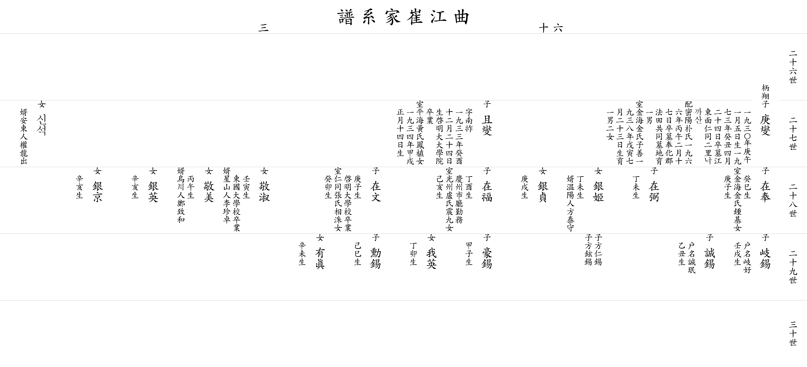

| 곡 강 최 가 계 보 |
| 이전☜ 쪽 60-3 ☞다음 |
| 26세 | ||||||||||
| 27세 |
▲ 경섭 庚燮 |
아버지 ▲병상(柄翔)의 셋째 아들 1930년(庚午) 1월 5일생 1973년(癸丑) 4월 24일 별세 묘 강동면 인동2리 낙까산 큰 할머니 밀양박씨 1966년(丙午) 2월 27일 별세 묘 봉화군 법전공동묘지 외아들을 낳아 기르심 둘째 할머니 김해김씨 자선(子善) 1938년(戊寅) 7월 23일생 1남 2녀를 두심 딸 은희(銀姬) 정미생 사위 온양인 방태수(方泰守) 외손 인석(仁錫) 현석(鉉錫) 딸 은정(銀貞) 경술생 |
▲ 차섭 且燮 |
아버지 ▲병상(柄翔)의 넷째 아들 자 남조(南祚) 1933년(癸酉) 12월 24일생 계명대 대학원 졸업 아내 평해황씨 봉식(鳳植)의 따님 1934년(甲戌) 1월 14일생 딸 경숙(敬淑) 임인생 동국대학교 졸업 사위 성산인 이진탁(李珍卓) 딸 경미(敬美) 병오생 사위 오천인 정치화(鄭致和) 딸 은영(銀英) 신해생 딸 은경(銀京) 신해생 |
||||||
| 28세 |
재봉 在奉 |
계사생 아내 김해김씨 종기(鍾基)의 따님 경자생 |
재필 在弼 |
정미생 |
재복 在福 |
정유생 경주시청 근무 아내 광주노씨 진구(震九)의 따님 기해생 딸 아영(我英) 정묘생 |
재문 在文 |
경자생 계명대학교 졸업 아내 인동장씨 상수(相洙)의 따님 계묘생 딸 유진(有眞) 신미생 |
||
| 29세 |
기석 岐錫 |
호명 기호(岐好) 임술생 |
성석 誠錫 |
호명 성민(誠珉) 을축생 |
호석 豪錫 |
갑자생 |
훈석 勳錫 |
기사생 | ||
| 30세 | ||||||||||
| 이전☜ 쪽 60-3 ☞다음 |
|  |